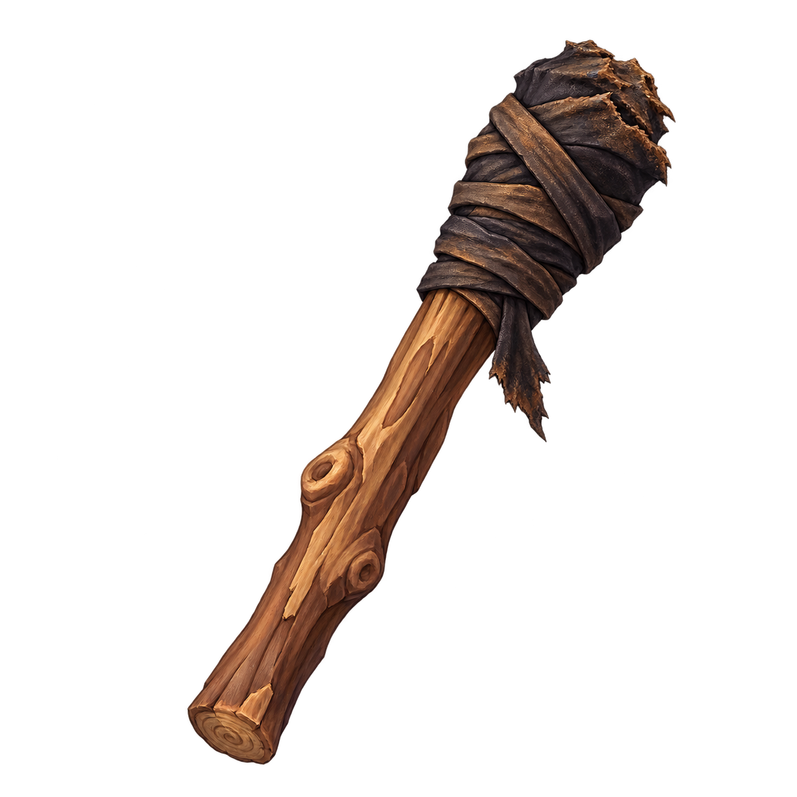

Campo
Antorcha apagada
Icono disponible · GLB recibido y optimizado
Modelo del autor integrado al uso visual; originales conservados.
PNG para Tripo Dónde entregar
docs/art/source/torch-resin-coconut-v1/antorcha/antorcha-v1.glb